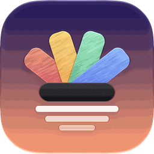

Prisme — Confidentialité
App pour iPhone et iPad · mise à jour le 30/10/2026
Prisme fabrique tes widgets, ton île et tes fonds sur ton appareil.
En bref
- Aucune publicité, aucun compte à créer, aucun traçage publicitaire.
- Aucune statistique d'utilisation et aucun rapport de plantage automatique ne sont envoyés par cette version.
- Rien n'est vendu ni partagé avec qui que ce soit.
- Tes données restent sur ton appareil, sauf ce qui est listé dans « Connexions ».
Ce que l'app garde sur ton appareil
- Agenda, rappels, pas : lus sur l'appareil pour les afficher dans l'île et les widgets, jamais envoyés.
- Créations, thèmes et réglages : enregistrés sur l'appareil.
- Clé OpenAI facultative (fond « Décris ton fond ») : rangée dans le trousseau de l'appareil.
- Météo : seule la ville choisie est envoyée à Open-Meteo pour obtenir les prévisions.
Connexions
- Météo : Open-Meteo reçoit la ville choisie (ou ta position approximative si tu l'autorises), sans compte.
- « Décris ton fond » : seulement si tu ajoutes ta clé, ta description part chez OpenAI.
Autorisations demandées
- Agenda et rappels : pour les afficher dans l'île et les widgets.
- Mouvement : pas, distance et étages dans les widgets.
- Position (pendant l'utilisation) : météo de l'endroit où tu es, facultatif.
- Photos (ajout seulement) : pour enregistrer tes fonds et icônes.
Chaque autorisation est demandée au moment où elle sert ; tu peux la retirer à tout moment dans Réglages › Confidentialité et sécurité.
Inscription de l'appareil
Inscription de l'iPhone (nécessaire pour cette app) : tu donnes ton prénom, et le profil d'inscription envoie l'identifiant de l'appareil (UDID) et son modèle à Rayane, rien d'autre. Ils servent uniquement à autoriser l'installation chez Apple.
Installation directe
Cette app est installée directement, sans passer par l'App Store ni TestFlight. Apple ne reçoit de notre part que l'identifiant de ton appareil (pour autoriser l'installation).
Supprimer tes données
Supprime l'app : tout ce qu'elle a enregistré sur l'appareil disparaît avec elle. Les clés que tu as saisies peuvent aussi être effacées depuis ses réglages.
Contact
Une question ou une demande ? Contacte Rayane directement.